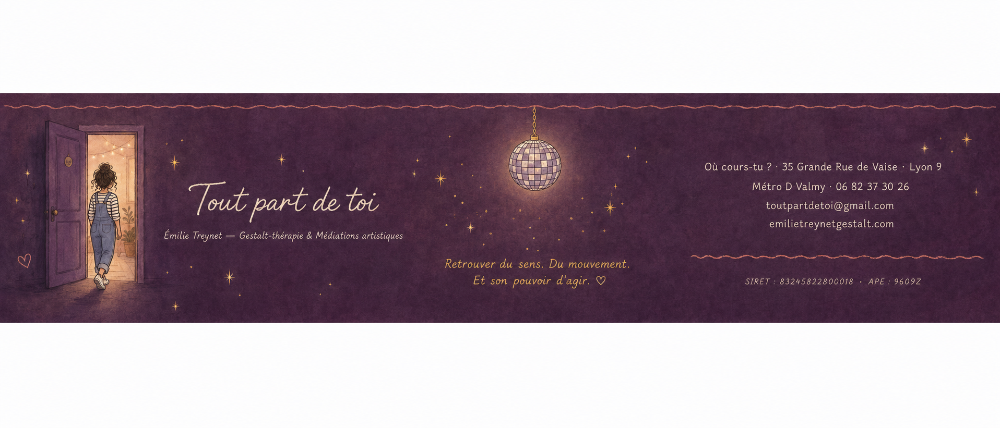
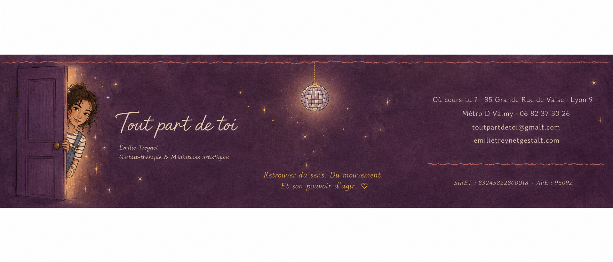

|

|
|
Tout part de toi
Un nouveau site
& un dernier Café Psycho
✦ ✧ ✦
Une newsletter intermédiaire, entre deux élans,
pour vous partager deux belles nouvelles.
|
|
Bonjour à toutes et tous,
Je vous écris entre deux newsletters “officielles”, parce qu’il y a des nouvelles qui ne rentrent pas toujours sagement dans le calendrier prévu.
Et puis, justement, ces derniers temps, il a beaucoup été question de mouvements, de réajustements, de lieux qui s’ouvrent, de formes qui se transforment.
|
✨ Mon nouveau site est en ligne
La première nouvelle, c’est la sortie de mon nouveau site :
emilietreynetgestalt.com
Il est encore tout frais, tout neuf, et il me ressemble déjà beaucoup plus.
J’y ai mis davantage de clarté sur ce que je propose aujourd’hui : les séances individuelles, les accompagnements de couple, les ateliers, les cafés psycho, mon approche de la Gestalt, mon lien au corps, aux émotions, aux passages de vie, aux relations, aux blessures d’attachement.
Ce site, c’est un peu une maison ouverte. Un endroit pour découvrir mon univers, sentir si quelque chose résonne, comprendre comment je travaille, et peut-être faire un premier pas vers un accompagnement.
|
|
|
✦ ✧ ✦
Retrouver du sens, du mouvement,
et du pouvoir d’agir.
|
🌿 Dernier Café Psycho de la saison
La deuxième nouvelle, c’est que le dernier Café Psycho de la saison aura finalement lieu après plusieurs rebondissements, changements de date, déplacements, réajustements — la vie, quoi.
|
Rendez-vous
Samedi 4 juillet
à 18h30
chez Où cours-tu ?
36 Grande rue de Vaise
69009 Lyon
Métro D · Valmy
|
Et cette fois, il prendra une forme un peu spéciale.
Pour clôturer la saison, j’aurai la joie de co-animer cette rencontre avec Flo, des Arcanes de Flo.
Nous explorerons ensemble les grands passages de l’âge adulte : ces moments de bascule, de crise, de mue, de questionnement intérieur, où quelque chose de l’ancien ne suffit plus tout à fait… sans que le nouveau soit encore clairement là.
Il sera question de décennies, d’archétypes, de tirages, de ressentis, de corps, de parole, de symboles, de ce qui appelle en nous à changer de forme.
Un Café Psycho un peu plus psycho-spirituel que d’habitude.
Un temps pour faire le point.
Pour sentir où l’on en est.
Pour honorer ce qui se transforme.
|
|
Participation
Ce Café Psycho est proposé à prix libre et conscient.
Les personnes ayant déjà assisté à un Café Psycho cette saison ne contribueront pas financièrement à l’atelier.
Elles pourront simplement, si elles le souhaitent, consommer quelque chose au café pour soutenir le lieu qui nous accueille.
|
|
|
Je suis très heureuse que cette dernière rencontre puisse avoir lieu chez Où cours-tu ?, dans ce lieu chaleureux, vivant, ouvert, que je suis en train d’apprivoiser et qui devient peu à peu ma nouvelle maison professionnelle.
Il n’y a pas d’inscription formelle, mais si vous prévoyez de venir, un petit SMS ou WhatsApp est le bienvenu.
Vous pouvez venir tel·le que vous êtes, avec votre curiosité, vos questions, vos passages en cours, vos silences aussi.
|
💛 Soutenir Où cours-tu ?
Si cette dernière rencontre peut avoir lieu dans ce lieu, c’est aussi parce qu’Où cours-tu ? est en train de faire exister quelque chose de précieux : un espace vivant, chaleureux, ouvert, à la croisée du soin, du lien, de la santé et de l’environnement.
Un lieu comme celui-ci ne se construit pas seul.
Où cours-tu ? a lancé une campagne de financement participatif pour soutenir son développement, son installation et la suite de cette aventure collective.
Si vous avez envie de découvrir le projet, de le soutenir, ou simplement de faire circuler l’information autour de vous, voici le lien :
|
|
Et si on se rencontrait ?
Pour une séance individuelle, un accompagnement de couple,
ou simplement pour découvrir mon approche.
Prendre rendez-vous
|
|
|
Au plaisir de vous retrouver pour cette dernière rencontre de la saison,
Émilie TREYNET
Psychopraticienne Gestalt
Gestalt-thérapie & médiations artistiques
Tout part de toi
emilietreynetgestalt.com
toutpartdetoi@gmail.com
|
|

|
|
Vous recevez cette lettre parce que vous avez croisé le chemin de Tout part de toi.
Pour vous désinscrire, veuillez envoyer un mail à
toutpartdetoi@gmail.com
.
|
|